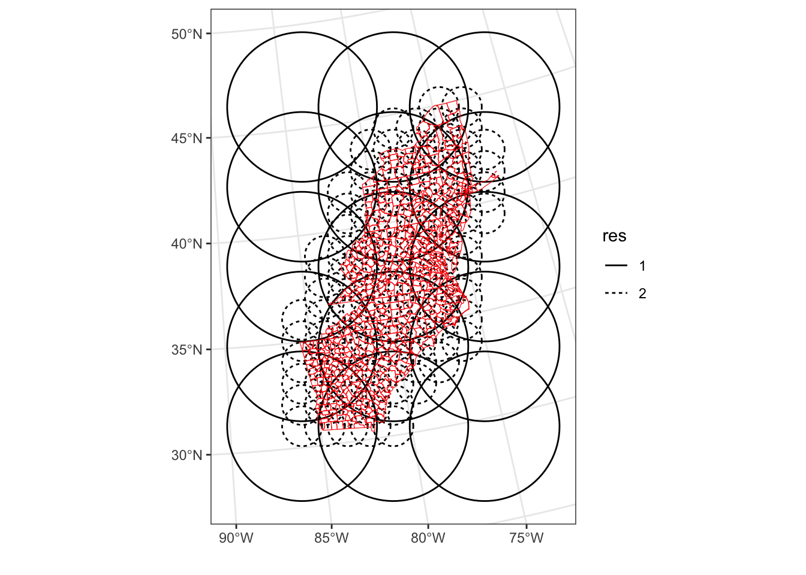

install.packages("terra")GEOG 5160 6160 Lab 04
Introduction
While machine learning methods have been frequently used with spatial data, there is a growing awareness of how the characteristics of these data may cause some issues. In this lab, we’ll look at how more robust methods of evaluating machine learning models with spatial data, and at some approaches that can incorporate location and improve predictions.
We’ll use a couple of datasets to illustrate these methods:
- lsl.csv: Location of landslide events in southern Ecuador
- ta.tif: A raster file with environmental predictors
- data_atlantic_1998_2012.csv: A dataset of cancer rates for counties in Atlantic states
- COUNTY_ATLANTIC.zip: a shapefile for the Atlantic States
You will need to make sure the following packages are installed on your computer (in addition to the packages we have used in previous labs).
- terra: working with raster data
- sf: working with spatial data
- tmap: making thematic maps
- spatialsample: spatial sampling
- SpatialML: geographic random forests
- FRK: spatial basis functions
As a reminder, packages can be installed in RStudio by going to the ‘Packages’ tab and clicking on the [Install] button, or from the menu [Tools]-> [Install packages…]. You can also install these from the console window by typing
Objectives
- Understand how to use different cross-validation strategies for spatial data
- Use a geographic random forest to explore spatial variations in model results
- Incorporate location in machine learning models
It is highly recommended to use scripts or Quarto documents to store your R code - this will allow you to easily change and modify it and submit the exercise.
Next load the libraries you will need for the lab. You should at this stage have most of these already installed. Add anything that is not installed using the install.packages() function.
library(tidyverse)
library(tidymodels)Warning: package 'broom' was built under R version 4.4.1library(sf)Warning: package 'sf' was built under R version 4.4.1library(terra)
library(tmap)Data processing
Let’s load the landslide data first and take a look at the content:
lsl = read.csv("./datafiles/lsl.csv")
head(lsl) x y lslpts slope cplan cprof elev
1 713887.7 9558537 FALSE 33.75185 0.023180449 0.003193061 2422.810
2 712787.7 9558917 FALSE 39.40821 -0.038638908 -0.017187813 2051.771
3 713407.7 9560307 FALSE 37.45409 -0.013329108 0.009671087 1957.832
4 714887.7 9560237 FALSE 31.49607 0.040931452 0.005888638 1968.621
5 715247.7 9557117 FALSE 44.07456 0.009686948 0.005149810 3007.774
6 714927.7 9560777 FALSE 29.85981 -0.009047707 -0.005738329 1736.887
log10_carea
1 2.784319
2 4.146013
3 3.643556
4 2.268703
5 3.003426
6 3.174073The first two columns show the easting and northing. The third indicates whether or not a landslide had occurred at that location (the target) and the remaining columns are features to be used in the model. See the appendix for more detail on these.
lsl <- lsl |>
mutate(lslpts = as.factor(as.numeric(lslpts)))We can use the st_as_sf function from the sf package to conver these to a simple features spatial object and plot:
lsl_sf <- st_as_sf(lsl, coords = c("x", "y"), crs = 32717)
plot(st_geometry(lsl_sf))And we can use the thematic mapping package to show the distribution of the landslide points:
tm_shape(lsl_sf) +
tm_symbols(col = "lslpts") +
tm_scale_bar(position = c("left", "top")) +
tm_compass(position = c("right", "top"))Next let’s load some environmental data to make predictions. This is in a multi-layer GeoTIFF file, and we can load it using the rast function from terra:
env <- rast("./datafiles/ta.tif")
envclass : SpatRaster
dimensions : 415, 383, 5 (nrow, ncol, nlyr)
resolution : 10, 10 (x, y)
extent : 711962.7, 715792.7, 9556862, 9561012 (xmin, xmax, ymin, ymax)
coord. ref. : WGS 84 / UTM zone 17S (EPSG:32717)
source : ta.tif
names : slope, cplan, cprof, elev, log10_carea
min values : 0.00000, -25.697536, -0.3194027, 1711.204, 2.000000
max values : 76.17377, 4.267366, 0.1368342, 3164.165, 5.733915 Each of the individual layers can be accessed using R’s list notation, with two brackets. So to map the log10_carea values:
tm_shape(env[["log10_carea"]]) +
tm_raster(style = "sd") +
tm_shape(lsl_sf) +
tm_dots()Spatial prediction
First, let’s build a simple model using a classic train/test split (80/20) and evaluate it. First create the training/test split. Note that the data is well balanced (equal numbers of 1’s and 0’s) so we don’t need to worry about stratifying the sample:
library(tidymodels)
dat_split <- initial_split(lsl, prop = 0.80)
dat_train <- training(dat_split)
dat_test <- testing(dat_split)Next, we’ll build a model. We’re going use a random forest without tuning, so we can simply:
- Set up the formula to define the target (
lslpts) and the features - Instantiate a random forest object
- Fit the model using the training set
lsl_f <- lslpts ~ slope + cplan + cprof + elev + log10_carea
rf <- rand_forest(mode = "classification")
rf_fit <- rf |>
fit(lsl_f, dat_train)We’ll get a first evaluation here using the AUC:
y_test_pred <- predict(rf_fit, dat_test, type = 'prob') |>
bind_cols(dat_test |> dplyr::select(lslpts))
roc_auc(y_test_pred, lslpts, .pred_1, event_level = 'second')# A tibble: 1 × 3
.metric .estimator .estimate
<chr> <chr> <dbl>
1 roc_auc binary 0.859We get an AUC of around 0.88, which indicates a pretty good model. We’ll dig into this more below.
Next, let’s predict landslide susceptibility for the study region using the raster images we loaded above. In the previous lab, we did this by extracting all the values to a data frame, and then predicting. An easier way is to use the predict function that comes with the terra package, which allows direct prediction on raster layers. We’ll do this below, but a few things to note:
- We use the
::notation to force R to use thepredictfunction from the terra package (there are other packages with the same function name) - We use the fitted model from the tidymodels object (
rf_fit$fit) - We set the
typetoresponseto get predictions on a 0-1 scale - Last, and possibly most important, the input raster (
env) must have the same names for the layers as the columns in the data frame used to fit the model
Let’s now predict:
lsl_pred = terra::predict(env, model = rf_fit$fit,
type = "response", na.rm = TRUE)And plot. Note that this gives two rasters as output: a) the probability of the absence of a landslide and b) the probability of presence, so we’ll plot the second one here (X1)
tm_shape(lsl_pred[["X1"]]) +
tm_raster() +
tm_shape(lsl_sf) +
tm_dots()Spatial cross-validation
Now let’s dig a little further into the cross-validation of this model. The AUC value we got above is from a single hold-out, ignoring the spatial distribution of the observations.
First, let’s re-run this as a 5-fold cross-validation to get a more robust estimate. For this we:
- Define a recipe using the formula from above
- Instantiate a random forest (we could simply reuse the code above, but adding this here helps clarify what is going on)
- Define and create the folds
- Link all of this together into a workflow
- Run the cross-validation and check the results
rec <- recipe(lslpts ~ slope + cplan + cprof + elev + log10_carea, lsl)
rf <- rand_forest(mode = "classification")
nfolds = 5
folds <- vfold_cv(lsl, v = nfolds)
workflow <- workflow() |>
add_recipe(rec) |>
add_model(rf)
results <- workflow |>
fit_resamples(resamples = folds,
metrics = metric_set(accuracy, roc_auc))
collect_metrics(results)# A tibble: 2 × 6
.metric .estimator mean n std_err .config
<chr> <chr> <dbl> <int> <dbl> <chr>
1 accuracy binary 0.777 5 0.0147 Preprocessor1_Model1
2 roc_auc binary 0.852 5 0.0135 Preprocessor1_Model1And we get a slightly lower, but more robust AUC estimate. However, we still haven’t accounted for the spatial dependency in the data. This means that the value we have is somewhat reliant on the spatial correlation between the training and test set, as the observations are mixed. This means that our AUC value is really telling us about how well the model predicts within existing observations, in other words, how well it can interpolate.
A different test is how well our model would work in an area where we know the features, but we don’t have any observations of landslides (or non-landslides). This will tell us how well the model works at predicting outside existing observations, or how well it can extrapolate. To test this, we need to use a spatial sampling method that will divide the data into contiguous training and testing regions. In a spatial \(k\)-fold, we divide the data into \(k\) regions, set one as testing and the others as training, fit and evaluate a model and repeat.
We’ll use the spatialsample library to create the sampling scheme. This has a number of options - we’ll use a clustering approach, where clusters of locations are made based on the distance between them.
Let’s go ahead and build this now. Note that we have to pass the sf object we made earlier (so that the function can find the coordinates):
library(spatialsample)Warning: package 'spatialsample' was built under R version 4.4.1spfolds <- spatial_clustering_cv(data = lsl_sf,
v = nfolds)This library comes with an autoplot function to quickly visualize the results:
autoplot(spfolds)An alternative is spatial block sampling, where the study region is divided into regular grid. All observations in a grid box are considered as part of a fold, with several boxes making the entire fold:
spblock <- spatial_block_cv(data = lsl_sf,
v = nfolds)
autoplot(spblock)We’ll now use the first set of folds (the cluster sampling) to cross-validate the model. This integrates well with the tidymodels approach we have used so far, with the only difference that
- We need to specify the
sfobject in the recipe, not the data frame - We use
spfoldsin the resampling.
I’ve copied the full code again here, so that it is easier to see what is going on.
rec <- recipe(lslpts ~ slope + cplan + cprof + elev + log10_carea, lsl_sf)
rf <- rand_forest(mode = "classification")
workflow <- workflow() |>
add_recipe(rec) |>
add_model(rf)
results <- workflow |>
fit_resamples(resamples = spfolds,
metrics = metric_set(accuracy, roc_auc))
collect_metrics(results)# A tibble: 2 × 6
.metric .estimator mean n std_err .config
<chr> <chr> <dbl> <int> <dbl> <chr>
1 accuracy binary 0.733 5 0.0345 Preprocessor1_Model1
2 roc_auc binary 0.768 5 0.0310 Preprocessor1_Model1You should see here that the AUC decreases substantially, indicating less predictive power when extrapolating.
Using location in machine learning
We’ll now move on to exploring the use of location in machine learning. We’ll look at this in three ways
- Geographical random forest (GRF)
- Using coordinates as features
- Spatial basis functions
We’ll also use a different data set here, with a continuous outcome, as the current GRF implementation does not work (well) with with binary outcomes.
The file data_atlantic_1998_2012.csv contains information on cancer rates from around 660 counties in the eastern part of the US. Let’s load that here as well as a shapefile containing the county polygons:
atl <- st_read("./datafiles/COUNTY_ATLANTIC.shp")Reading layer `COUNTY_ATLANTIC' from data source
`/Users/u0784726/Dropbox/Data/devtools/geog5160/datafiles/COUNTY_ATLANTIC.shp'
using driver `ESRI Shapefile'
Simple feature collection with 666 features and 13 fields
Geometry type: MULTIPOLYGON
Dimension: XY
Bounding box: xmin: 939223.1 ymin: 905588.4 xmax: 1991064 ymax: 2658558
Projected CRS: AlbersatlSimple feature collection with 666 features and 13 fields
Geometry type: MULTIPOLYGON
Dimension: XY
Bounding box: xmin: 939223.1 ymin: 905588.4 xmax: 1991064 ymax: 2658558
Projected CRS: Albers
First 10 features:
ID ID2 FIPS x y REGION_ID DIVISION_I STATE_ID COUNTY_ID
1 7873 1 13111 1056524 1376613 3 5 13 111
2 7874 2 42115 1653442 2267301 1 2 42 115
3 7876 4 42075 1633708 2096683 1 2 42 75
4 7877 5 51683 1584049 1901443 3 5 51 683
5 7879 7 36057 1735811 2409536 1 2 36 57
6 7880 8 13149 1003647 1193902 3 5 13 149
7 7882 10 37153 1463896 1452940 3 5 37 153
8 7883 11 51735 1716543 1743451 3 5 51 735
9 7884 12 37003 1320296 1533039 3 5 37 3
10 7885 13 37063 1520852 1580157 3 5 37 63
REGION DIVISION STATE COUNTY
1 South South Atlantic Georgia Fannin County
2 Northeast Middle Atlantic Pennsylvania Susquehanna County
3 Northeast Middle Atlantic Pennsylvania Lebanon County
4 South South Atlantic Virginia Manassas city
5 Northeast Middle Atlantic New York Montgomery County
6 South South Atlantic Georgia Heard County
7 South South Atlantic North Carolina Richmond County
8 South South Atlantic Virginia Poquoson city
9 South South Atlantic North Carolina Alexander County
10 South South Atlantic North Carolina Durham County
geometry
1 MULTIPOLYGON (((1037682 138...
2 MULTIPOLYGON (((1622674 228...
3 MULTIPOLYGON (((1623002 211...
4 MULTIPOLYGON (((1582646 190...
5 MULTIPOLYGON (((1725613 241...
6 MULTIPOLYGON (((1012385 120...
7 MULTIPOLYGON (((1436892 146...
8 MULTIPOLYGON (((1712132 174...
9 MULTIPOLYGON (((1305611 153...
10 MULTIPOLYGON (((1510715 160...cancer <- read.csv("./datafiles/data_atlantic_1998_2012.csv")
head(cancer) FIPS x y Cancer Poverty Smoking PM25 NO2
1 13111 1056524 1376613 72 15.920000 27.93333 11.75533 0.9776667
2 42115 1653442 2267301 59 12.220000 26.96667 9.02600 1.4999333
3 42075 1633708 2096683 61 8.986667 25.27333 11.96333 3.6164667
4 51683 1584049 1901443 62 7.860000 22.90000 12.73133 3.6219333
5 36057 1735811 2409536 59 14.746667 27.18000 8.30200 1.6327333
6 13149 1003647 1193902 86 17.506667 30.21333 12.27133 1.6258000
SO2
1 0.064184954
2 0.033210980
3 0.120281334
4 0.118371127
5 0.006404368
6 0.138780485Both the shapefile and the cancer data have the county FIPS code, so we can use this to merge the two datasets together, which allows us to map out the cancer rates, showing high rates in the south and western part of the region:
atl_cancer <- merge(atl, cancer, by = "FIPS")tm_shape(atl_cancer) +
tm_fill("Cancer", palette = "viridis") +
tm_scale_bar() + tm_compass()Geographical random forest
Let’s start this section by building a GRF with these data. To keep things simple here and below, we’ll just use the pollutant variables as features (PM25, NO2 and SO2). The GRF function does not use the sf object that we made earlier, but instead uses the original cancer dataframe and a second dataframe with the coordinates of each spatial location. We’ll extract this from the sf object by finding the centroids, and then the coordinates of these
atl_crds <- st_coordinates(st_centroid(atl_cancer))Warning: st_centroid assumes attributes are constant over geometriesNow we can fit the model. We won’t try and tune this here, but instead run it with an adaptive kernel that uses the 50 closest locations to build each model in a moving window (you might want to try playing with the bw argument to see how this affects the results). Note the other arguments:
- The formula defining the relationship between variables
- The dataframes holding the data (
dframe) and coordinates (coords)
library(SpatialML)
cancer_grf <- grf(Cancer ~ PM25 + NO2 + SO2,
dframe = cancer, kernel = 'adaptive', bw = 50,
coords = atl_crds)The function will give you quite a lot of output (you can turn this off with print.results=FALSE). The routine starts by fitting a global model (i.e. with all the observations) and then fits local models to each observation using the kernel we defined in the function. The output contains a summary of both of these, and we can use this contrast the global and local approaches. Two useful numbers are a) the global and local R2 and b) the global and local MSE.
More usefully, we can start to visualize the results. First we’ll explore the importance of the three features we used in the model. As a remidner, this is a measure of the loss of predictive power when one of the variables is randomly shuffled. Let’s start by plotting the importance scores for the global model:
library(vip)
Attaching package: 'vip'The following object is masked from 'package:utils':
vicancer_grf$Global.ModelRanger result
Call:
ranger(Cancer ~ PM25 + NO2 + SO2, data = cancer, num.trees = 500, mtry = 1, importance = "impurity", num.threads = NULL)
Type: Regression
Number of trees: 500
Sample size: 666
Number of independent variables: 3
Mtry: 1
Target node size: 5
Variable importance mode: impurity
Splitrule: variance
OOB prediction error (MSE): 115.67
R squared (OOB): 0.206582 vip(cancer_grf$Global.Model)Next, let’s get the local importance scores. In the model output, there is a dataframe called Local.Variable.Importance which (unsurprisingly) holds the importance scores for each model (for each location). A second dataframe (LGofFit) holds goodness of fit scores for each location and we’ll use this to visualize variations in the R2:
head(cancer_grf$Local.Variable.Importance) PM25 NO2 SO2
1 2044.929 1732.776 1690.391
2 1929.720 1506.556 1376.632
3 2105.785 2183.204 1949.283
4 2756.430 3203.703 2956.593
5 2048.248 2999.279 2100.533
6 2170.188 3266.095 1940.039head(cancer_grf$LGofFit) y LM_yfitOOB LM_ResOOB LM_yfitPred LM_ResPred LM_MSE LM_Rsq100 LPerm
1 72 80.31717 -8.317172 72.91480 -0.9148000 161.6326 0.04358035 1
2 59 66.19865 -7.198649 60.09307 -1.0930667 183.8992 -0.14175025 1
3 61 70.37059 -9.370588 61.71567 -0.7156667 138.2902 0.01605955 1
4 62 69.00675 -7.006746 62.37223 -0.3722333 196.0372 0.06114106 1
5 59 74.54531 -15.545312 60.68187 -1.6818667 157.9136 0.02292043 1
6 86 59.49583 26.504167 81.86950 4.1305000 153.4297 0.20024266 1Let’s extract these and add them to our sf object:
atl_cancer$localR2 <- cancer_grf$LGofFit$LM_Rsq100
atl_cancer$vip_PM25 <- cancer_grf$Local.Variable.Importance$PM25
atl_cancer$vip_NO2 <- cancer_grf$Local.Variable.Importance$NO2
atl_cancer$vip_SO2 <- cancer_grf$Local.Variable.Importance$SO2And finally map everything:
tm_shape(atl_cancer) +
tm_fill(c("localR2",
"vip_PM25", "vip_NO2", "vip_SO2"))A few things to note from these maps:
- The local R2 values vary a lot (with some regions that have negative values). This can be interpreted as a map of where the model is doing a reasonable job (green) and where it fails (red). The low values indicate that other variables may be important in producing this model
- The importance scores for the three features largely follow the same pattern (high importance around metropolitan centers, low elsewhere). This is not too surprising as pollutant values tend to correlate pretty strongly.
We’ll explore this a little further in the exercise.
Using coordinates as features
Next, we’ll explore the use of coordinates as features. Conceptually, we are trying to improve the model outcome by incorporating some measure of spatial dependency or autocorrelation between locations. This helps to address models that tend to over- or under-estimate systematically in space. To illustrate this point, we’ll first make a random forest model using all the data:
rf <- rand_forest(mode = "regression")
rf_fit <- rf |>
fit(Cancer ~ PM25 + NO2 + SO2, cancer)Now predict and merge into the sf object:
atl_cancer$y_hat = predict(rf_fit, cancer)$.predCalculate the error as prediction - observation and plot:
atl_cancer$error = atl_cancer$y_hat - atl_cancer$Cancer
tm_shape(atl_cancer) +
tm_fill("error") +
tm_scale_bar() + tm_compass()Variable(s) "error" contains positive and negative values, so midpoint is set to 0. Set midpoint = NA to show the full spectrum of the color palette.And these results show that systematic error in the model (note the region of negative values in the west and south, and positive values in the north-west). Before including the coordinates in a model, let’s run a 5-fold cross-validation on this model to get a reference RMSE and \(R^2\). I’ve listed all the steps in the next block of code for clarity:
- Set up the recipe (no data processing)
- Instantiate the model
- Define the cross-validation strategy
- Combine this into a workflow
- Run the cross-validation and print results
rec <- recipe(Cancer ~ PM25 + NO2 + SO2, cancer)
rf <- rand_forest(mode = "regression")
nfolds = 5
folds <- vfold_cv(cancer, v = nfolds)
workflow <- workflow() |>
add_recipe(rec) |>
add_model(rf)
results <- workflow |>
fit_resamples(resamples = folds,
metrics = metric_set(rmse, rsq))
collect_metrics(results)# A tibble: 2 × 6
.metric .estimator mean n std_err .config
<chr> <chr> <dbl> <int> <dbl> <chr>
1 rmse standard 10.7 5 0.493 Preprocessor1_Model1
2 rsq standard 0.216 5 0.0178 Preprocessor1_Model1Giving us an RMSE of around 10.67, and an \(R^2\) of 0.22.
Now let’s re-run this with coordinates included (these are in the x and y columns or we could use the centroid coordinates we extracted earlier):
rec <- recipe(Cancer ~ PM25 + NO2 + SO2 + x + y, cancer)
rf <- rand_forest(mode = "regression")
nfolds = 5
folds <- vfold_cv(cancer, v = nfolds)
workflow <- workflow() |>
add_recipe(rec) |>
add_model(rf)
results <- workflow |>
fit_resamples(resamples = folds,
metrics = metric_set(rmse, rsq))
collect_metrics(results)# A tibble: 2 × 6
.metric .estimator mean n std_err .config
<chr> <chr> <dbl> <int> <dbl> <chr>
1 rmse standard 9.08 5 0.0892 Preprocessor1_Model1
2 rsq standard 0.443 5 0.0226 Preprocessor1_Model1And we get a pretty substantial improvement in model performance, with around a 2 point drop in RMSE and a doubling of \(R^2\).
Spatial basis functions
As a final step, we’ll re-fit this model using spatial basis functions to represent location. As a reminder, these functions are designed to encode relative location (i.e. the proximity of each observation to the others) in a way that maximizes the signal-to-noise ratio in a memory efficient manner. These are best suited for large spatial and spatio-temporal datasets; we’ll use them here more as a demonstration of how to create and use these.
We’ll use these here to try and further improve our cancer model. R has an add-on library (FRK) that has a function to easily create these for spatial data. It currently only works with an oldr version of R’s spatial objects, so first, let’s convert our existing sf object to that format:
atl_cancer_sp <- as_Spatial(atl_cancer)Next, load the FRK library and use the auto_basis function to generate the basis functions for the cancer dataset:
library(FRK)
Attaching package: 'FRK'The following object is masked from 'package:terra':
distanceThe following object is masked from 'package:stats':
simulateatl_basis <- auto_basis(data = atl_cancer_sp)And we can quickly visualize the results:
show_basis(atl_basis) +
coord_fixed() +
geom_sf(data = atl_cancer, fill = NA, color = "red")Note: show_basis assumes spherical distance functions when plottingCoordinate system already present. Adding new coordinate system, which will
replace the existing one.By default, this places three levels of basis functions from low-resolution to capture large scale spatial patterns (large circles) to high-resolution to capture fine-scale patterns (smallest circles). The red polygons show the distribution of the counties from the cancer dataset.
If you type the name of the basis object (atl_basis) it will give you an overview. This shows a total of 1428 functions that we could relate our observations too. We’ll make some adjustments to this:
- We’ll only use two resolutions (
nres=2) - We’ll prune the basis functions. This removes all basis functions that have less than
pruneobservations
Note that you can also adjust the resolution of the functions. For example, adding the argument regular=2 will double the resolution. Alternatively, setting regular=0 will add irregular basis functions based on the data density.
atl_basis <- auto_basis(data = atl_cancer_sp,
nres = 2, prune = 2)NOTE: Zero process variability is implicitly enforced in regions where basis functions are pruned. Please use the option prune carefully: regions of data paucity are generally not reflective of regions of low process variability. Please set prune = 0 if unsure what to do.show_basis(atl_basis) +
coord_fixed() +
geom_sf(data = atl_cancer, fill = NA, color = "red")Note: show_basis assumes spherical distance functions when plottingCoordinate system already present. Adding new coordinate system, which will
replace the existing one.
Now, we need to extract the value of each basis function for each observation. The closer an observation is, then the higher the value will be, and this is then used to spatially correlate observations (i.e. observations who have similar values on all basis functions must be close together).
We do this in two steps. First, we use the function eval_basis to get the values for each observation as a matrix. We add column names starting with b to this to identify each function
basis_mat <- as.matrix(eval_basis(atl_basis, atl_cancer_sp))Averaging over polygons...colnames(basis_mat) <- paste0("b", 1:ncol(basis_mat))
dim(basis_mat)[1] 666 113The resulting matrix has the same nunber of rows as observations and same number of columns as basis functions. Next, we use R’s cbind function to merge this with the original cancer dataset to make a new dataframe (atl2. Then we drop all unused predictors.
atl2 <- cbind(cancer, basis_mat)
atl2 <- atl2 |>
select(-FIPS, -x, -y, Smoking, Poverty)Finally, we repeat out cross-validation exercise from above to estimate the predictive power of the model. Note that we use a much larger number of trees in the random forest, and a high number for the features used at each split, given the size of the new dataset
rec <- recipe(Cancer ~ ., atl2)
rf <- rand_forest(mode = "regression", trees = 2000, mtry = 20)
nfolds = 5
folds <- vfold_cv(atl2, v = nfolds)
workflow <- workflow() |>
add_recipe(rec) |>
add_model(rf)
results <- workflow |>
fit_resamples(resamples = folds,
metrics = metric_set(rmse, rsq))
collect_metrics(results)# A tibble: 2 × 6
.metric .estimator mean n std_err .config
<chr> <chr> <dbl> <int> <dbl> <chr>
1 rmse standard 8.68 5 0.0743 Preprocessor1_Model1
2 rsq standard 0.506 5 0.0364 Preprocessor1_Model1And we get another small improvement in the model. Note that we have not tuned any of these models (or the basis functions), and it’s is possible that better performance could be achieved in practice.
Exercise
In the cancer dataset, there are two possible predictor variables that we did not use above (poverty rates Poverty and smoking rates Smoking). For the exercise, you will need run a new analysis that includes these. There are three options given below; students in GEOG 5160 will need to do one of these, students in GEOG 6160 will need to do two.
- Use the cancer dataset to carry out a non-spatial and spatial cross-validation, following the example above. This will be a regression task, and you should include all the possible predictors (poverty, smoking and air pollutants). You can use a random forest, or any of the other algorithms we have looked at so far. Report the RMSE and \(R^2\) for both cross-validation methods, and write a short statement that explains in simple terms what these mean (1-2 sentences)
- Make a new geographical random forest model that includes the variables mentioned above. Your answer should include a) a variable importance plot based on the global model; b) maps of the importance scores for all variables and the local \(R^2\); c) a short description (2-4 sentences) of the spatial patterns you observe
- Make a new model with spatial basis functions that includes the variables mentioned above. You should try at least two different basis functions setups (I’d recommend that at least one uses the irregular basis functions described in the section above). Your answer should include a) a figure showing the distribution of the basis functions you used; b) cross-validated RMSE and \(R^2\) values; c) a short statement as to whether the basis functions have improved the model (1-2 sentences)
Use a Quarto document to record your answers and output. Assignments, to include both the Quarto document and (ideally) the compiled HTML file, should be submitted to Canvas by Feb 19th. Please use the following naming convention: Lab04_lastname.
Appendix 1: Datafiles
lsl.csv
x: easting (m)y: northing (m)lslpts: presence or absence of landslide ([0,1])slope: slope angle (degrees)cplan: plan curvature (rad m−1) expressing the convergence or divergence of a slope and thus water flowcprof: profile curvature (rad m-1) as a measure of flow acceleration, also known as downslope change in slope angleelev: elevation (m a.s.l.) as the representation of different altitudinal zones of vegetation and precipitation in the study arealog10_carea: the decadic logarithm of the catchment area (log10 m2) representing the amount of water flowing toward a location
ta.tif
Raster dataset with same predictor variables as lsl.csv